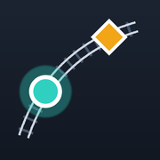

Horario programado de Renfe, con los retrasos en directo cuando se publican. Se dejan al menos 2 minutos para cada transbordo.
Horario programado. El retraso se muestra en tiempo real cuando Renfe lo publica.
Para añadir un tren, tócalo en el mapa y pulsa ☆ Favorito.
Quien abra el enlace la tiene lista, sin configurar nada. Para tenerla como una app más: en Safari, botón Compartir → «Añadir a pantalla de inicio».
Toca un tren para ver su recorrido y su retraso. Escribe una estación en el buscador para ver sus próximas salidas. Con «Cómo ir» buscas trayectos por Asturias, transbordos incluidos. Los trenes se actualizan cada 20 segundos.
Fuente: datos abiertos de Renfe (CC BY 4.0). Mapa: © colaboradores de OpenStreetMap.
